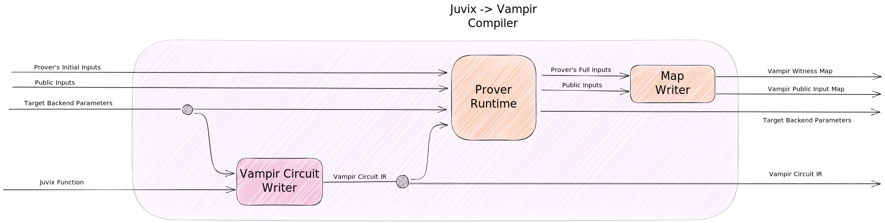

Juvix -> Vampir
Juvix -> Vampir Diagram

Two Parties
There are two parties who may want to use a Juvix -> Vampir compiler: a circuit writer and a prover.
Circuit Writer
The circuit writer takes a function \(f\) and some backend parameters and writes a circuit in Vampir such that the circuit is satisfied by \((x,y)\) if \(f(x) = y\).
The inputs and outputs of the function \(f\) together become the inputs to the circuit. We will call these the "initial inputs" to the circuit.
Prover
A Prover will want to check that their inputs to a circuit will actually satisfy it before going through the effort of constructing a proof.
Also a circuit typically needs to know the values of many auxililary variables that aren't specified as an input or output of the function. We will call these "auxiliary inputs".
During a process we are calling "prover runtime" the Prover computes the values of these auxiliary inputs which are specified in the Vampir circuit. If auxiliary inputs can't be found that satisfy the circuit then prover runtime should fail and notify the Prover.
The Prover Runtime takes a circuit written in Vampir, the backend parameters, and the Prover's initial inputs, and receives a witness map containing all of the inputs they need to satisfy the circuit, or \(\perp\) indicating their initial inputs are invalid.
Example
Suppose I am writing some smart contracts that mint tokens as rewards for solving certain math problems. This particular contract rewards users with a freshly-minted token for submitting a correct proof that a pair of numbers is relatively prime. I want users to be able to include up to four numbers in the circuit (so that six total pairs need to be checked). In order to keep track of minted tokens publicly a user must also submit a count of the number of coprime pairs among the six, which serves as a public claim to their new tokens.
Writing a Circuit in Vampir
Here we write this circuit in Vampir by hand. This can serve as a guide for the process that Juvix will need to perform.
A circuit can check if a pair of numbers is coprime by using Bezout's Identity, which states that integers \(a\) and \(b\) are coprime if there exist integers \(x\) and \(y\) such that \(ax+by = 1.\) This can be checked by the constraint \(0=ax+by-1\). Since we will use this constraint frequently we will define an alias for it:
def coprime a b {
0 = a*x + b*y - 1
}
We will combine this with some standard aliases provided by default in Vampir in order to finish writing the circuit.
Complete Circuit Written in Vampir
/* --- subset of standard aliases included in vampir --- */
// constrains a != 0
// requires the prover to give a number `x` which
// is a multiplicative inverse for a
def nonzero a {
0 = 1 - a*x
}
// b = (a == 0)
// gives a boolean `b` which is 1 if `a` is 0, or is 0 if `a` is nonzero
// constrains (a, b) to be in {(0, 1), (nonzero, 0)}
def is a -> b {
0 = a*b
0 = (nonzero a)*(1 - b)
}
/* ------ preamble with user-defined aliases ------ */
// checks that `a` and `b` are coprime using Bezout's Identity
def coprime a b {
0 = a*x + b*y - 1
}
/* ------------------ the circuit ----------------- */
pub count
count = (is (coprime x1 x2)) + (is (coprime x1 x3))
+ (is (coprime x1 x4)) + (is (coprime x2 x3))
+ (is (coprime x2 x4)) + (is (coprime x3 x4))
This particular circuit can be compiled into any backend library implementing any proof system that can handle arbitrary arithmetic circuits, provided it is translated into the appropriate constraint system. As this circuit is based entirely on polynomial expressions it can be expanded into this system of polynomial constraints by adding auxilary variables:
0 = (x1*x6 + x2*x7 - 1) * x9
0 = (1 - (x1*x6 + x2*x7 - 1)*x8)*(1 - x9)
0 = (x1*x10 + x2*x11 - 1) * x13
0 = (1 - (x1*x10 + x2*x11 - 1)*x12)*(1 - x13)
0 = (x1*x14 + x2*x15 - 1) * x17
0 = (1 - (x1*x14 + x2*x15 - 1)*x16)*(1 - x17)
0 = (x1*x18 + x2*x19 - 1) * x21
0 = (1 - (x1*x18 + x2*x19 - 1)*x20)*(1 - x21)
0 = (x1*x22 + x2*x23 - 1) * x25
0 = (1 - (x1*x22 + x2*x23 - 1)*x24)*(1 - x25)
0 = (x1*x26 + x2*x27 - 1) * x29
0 = (1 - (x1*x26 + x2*x27 - 1)*x28)*(1 - x29)
0 = x9 + x13 + x17 + x21 + x25 + x29 - x5
The circuit writer itself does not need to do this expansion.
Example Prover Runtime
We already know what the Prover's Initial Inputs must be:
initial_inputs = (x1, x2, x3, x4, pub x5)
...where x1,x2,x3,x4 are the four private numbers being tested for coprimality and x5 is the public token claim.
For a Prover to create a proof for this circuit it needs to provide all the internal wire values for each gate. (For instance, the x and y in each coprime gate.) The Prover's initial inputs (x1, x2, x3, x4, x5) will be expanded into a much larger list of witnesses.
The Prover first provides their values for these variables. In this example the Prover will provide (2, 3, 4, 7, 5). (Since 2 and 4 are not coprime there are only 5 coprime pairs to claim.)
So we can start with this initial witness map:
{
"x1": 2,
"x2": 3,
"x3": 4,
"x4": 7,
}
Then the Prover walks the gates of the circuit and computes the required extra values.
We start with (is (coprime 2 3)) which expands to:
0 = (coprime 2 3) * b
0 = (nonzero (coprime 2 3))*(1 - b)
Then (is (coprime 2 3)) can be regarded as (is 0), which expands to:
// (is 0)
0 = 0*b
0 = (nonzero 0)*(1 - b)
So all we have left is to compute the value of b that satisfies, which is 1, and append to the witness map:
{
"x9":1,
}
The Prover takes the witness map, the public input map, the circuit written in Vampir, and any necessary backend parameters to the Vampir backend compiler which can produce a proof.